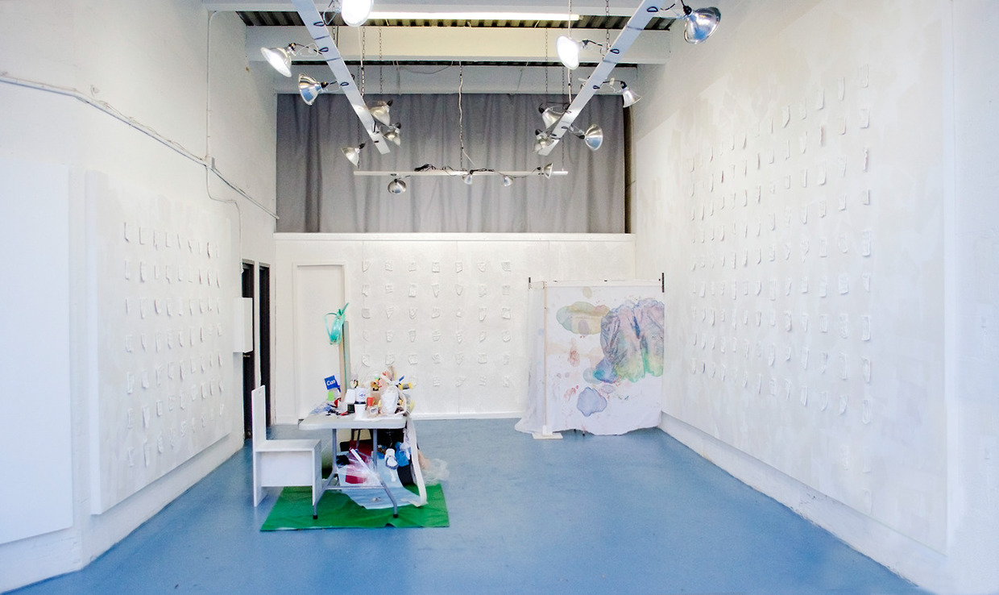
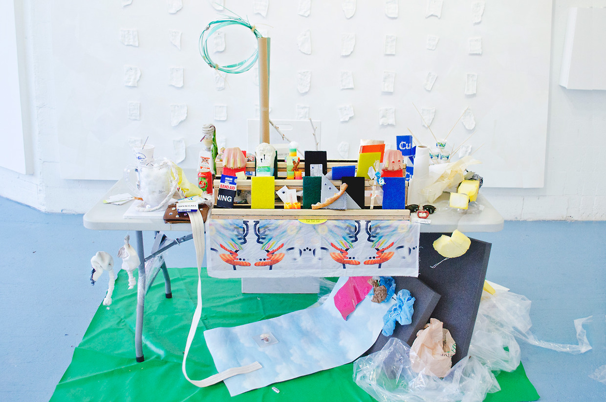
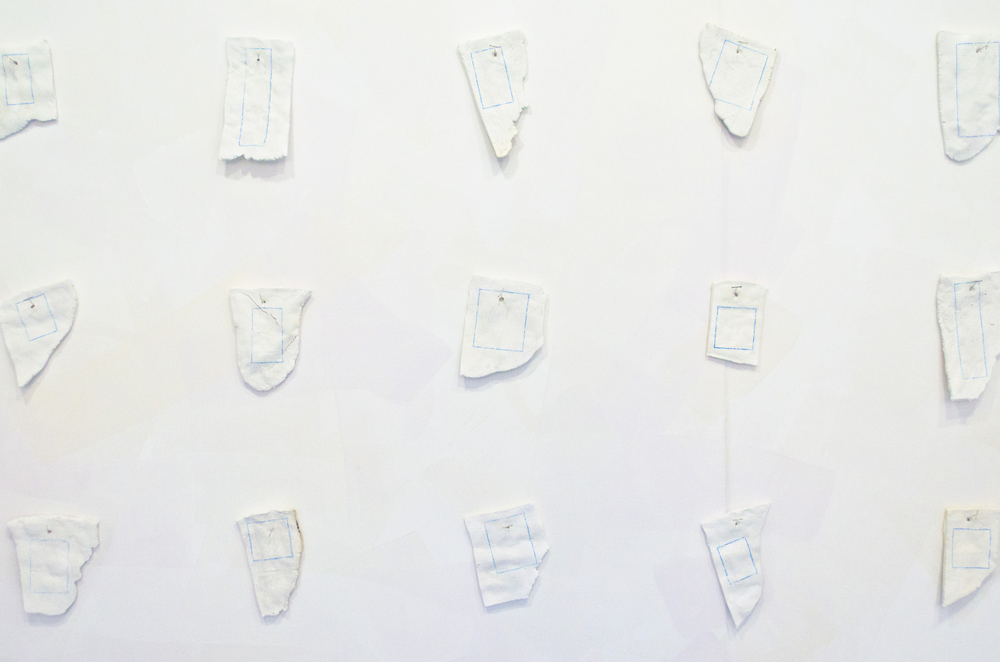

Cura(Tangled Hierarchy)
The first Cura(projects) show, featuring Jen Hitchings, Lucia Love and Sessa Englund, with an essay by Stephen Faught. Held at Fireworks Gallery , Brooklyn, 2013.
The title of curator has historically been reserved for those with advanced degrees in their chosen fields. However a new generation of artists have started performing the role of curator, caring for the work of their peers and creating new collaborative environments. The pieces, born out of conversation between the participatory artists, represents an extension of their practice as related to their personal relationship with curation.


